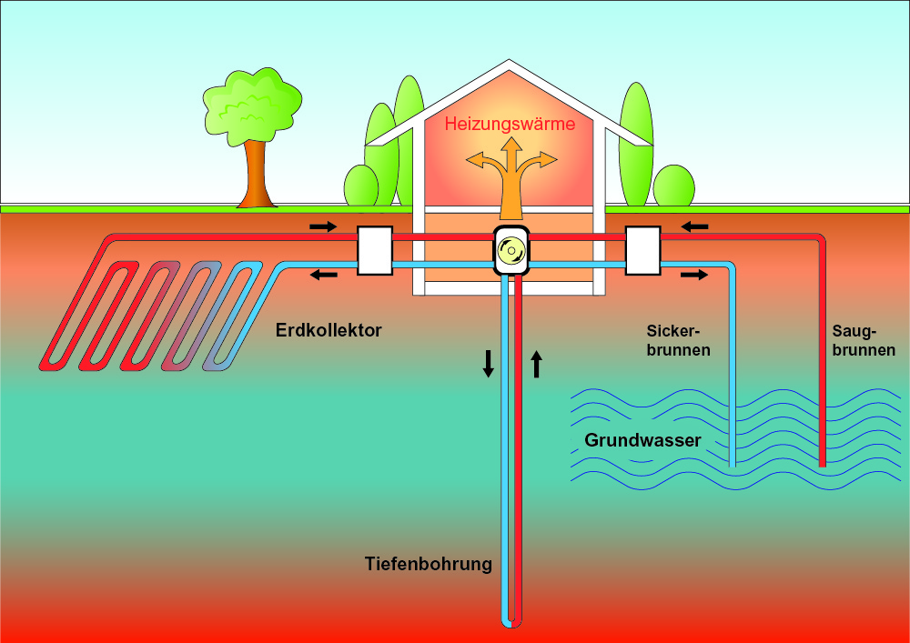

Lara, Emily, Alicia
Die Wärmewende beschreibt den Umstieg von Öl- und Gasheizungen auf klimafreundliche Heizsysteme. Da ein großer Teil der CO₂-Emissionen in Deutschland durch das Heizen von Gebäuden entsteht, ist dieser Wandel ein wichtiger Schritt für den Klimaschutz.
Eine zentrale Rolle spielen dabei Wärmepumpen. Sie nutzen Wärme aus der Luft, dem Erdreich oder dem Grundwasser und arbeiten besonders effizient.
Auch Fernwärmenetze gewinnen an Bedeutung, da sie ganze Stadtteile mit Wärme versorgen können
Ein besonders nachhaltiger Ansatz ist die Geothermie. Dabei wird die natürliche Wärme aus dem Erdinneren genutzt. Diese Energiequelle ist rund um die Uhr verfügbar, unabhängig vom Wetter und verursacht nur sehr geringe CO₂-Emissionen. Vor allem für Städte bietet die tiefe Geothermie großes Potenzial, da sie ganze Wärmenetze versorgen kann. Gleichzeitig kann oberflächennahe Geothermie in Kombination mit Wärmepumpen auch für einzelne Gebäude genutzt werden.

Mit dem Gebäudeenergiegesetz (GEG), oft auch als Heizungsgesetz bezeichnet, möchte die Bundesregierung den Anteil erneuerbarer Energien beim Heizen erhöhen. Ziel ist es, den schrittweisen Umstieg auf klimafreundliche Heizungen zu fördern und die Abhängigkeit von fossilen Brennstoffen zu reduzieren. Dabei sollen Bürgerinnen und Bürger durch Förderprogramme bei der Modernisierung ihrer Heizungsanlagen unterstützt werden.
Die Wärmewende ist ein wichtiger Baustein für den Klimaschutz. Technologien wie Wärmepumpen und Geothermie ermöglichen eine nachhaltige Wärmeversorgung und können langfristig dazu beitragen, den CO₂-Ausstoß im Gebäudesektor deutlich zu senken. Das Heizungsgesetz schafft hierfür die notwendigen Rahmenbedingungen und unterstützt den Wandel hin zu einer klimafreundlichen Zukunft.